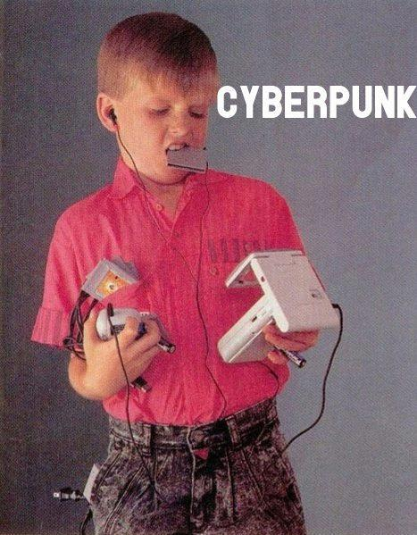

É um movimento muito louco que mistura pobreza e alta tecnologia.
 Clique na imagem para ir em um fórum!Claro que SIM as tecnologias vão dominar tudo!
Pesquisa feita para saber se as máquinas dominarão o mundo. 20 seres foram intrevistados:
| Tipos | Sim | Não |
|---|---|---|
| Cyborgs | 6 | 14 |
| Humanos | 12 | 8 |
| Otakus | 19 | 1 |